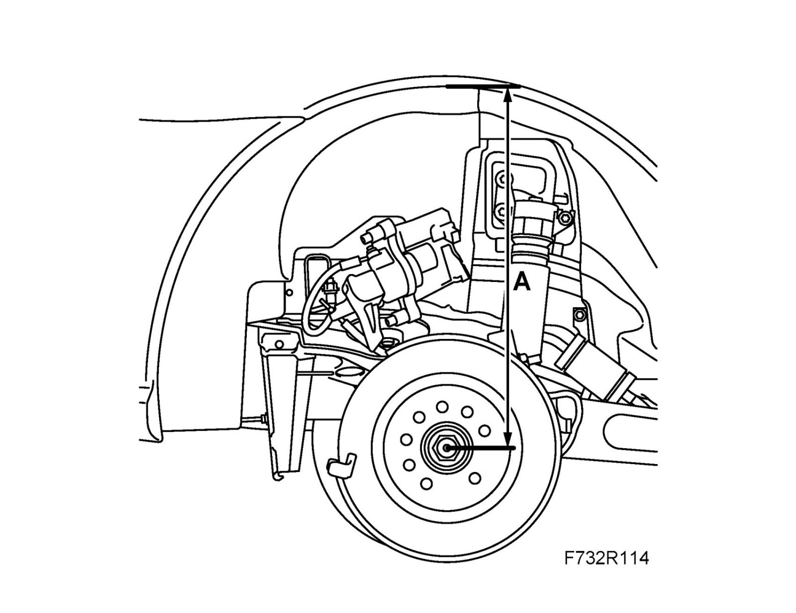
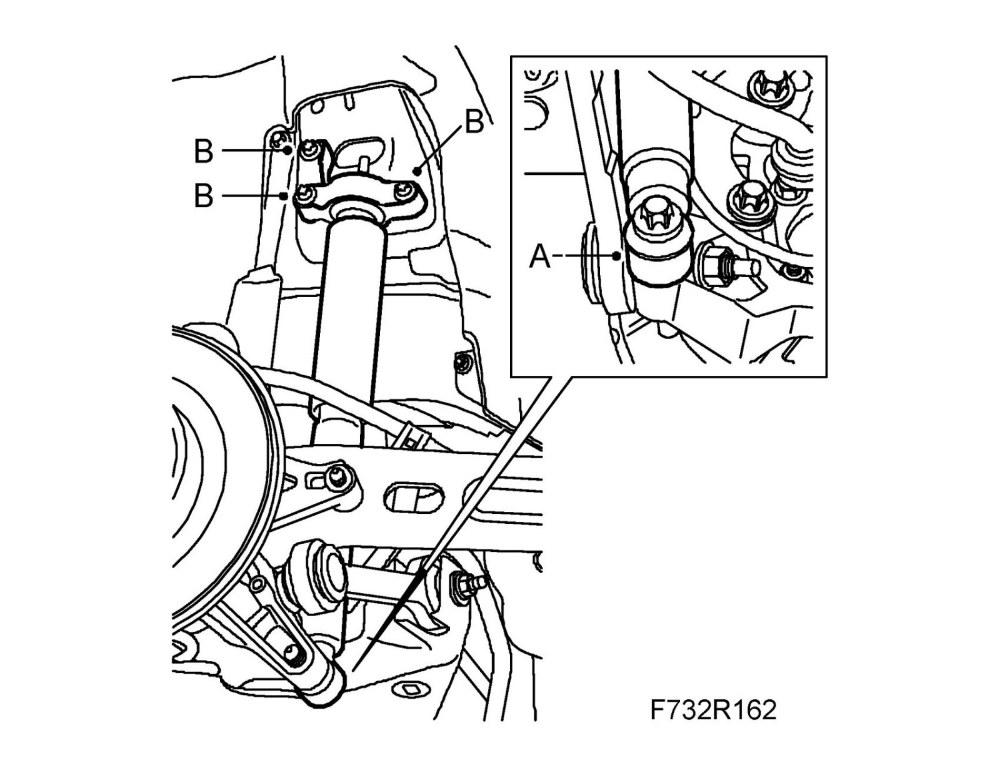

Rear Suspension
Shock absorberTo remove
1. Raise the car.
2. Remove the wheel.
3. Relieve the weight on the lower suspension arm using an pillar jack.
4. Clean, lubricate and remove the bolts holding the shock absorber (A) to the steering swivel member.

5. Remove the shock absorber bracket (B) from the body and lift away the shock absorber.
6. Remove the bracket from the shock absorber.
To fit
1. Fit the bracket to the shock absorber.
Tightening torque 27 Nm (20 lbf ft)
2. Fit the shock absorber bracket (B) to the body.
Tightening torque 53 Nm (39 lbf ft)

3. Lift the steering swivel member to normal position, 374 mm, 9-3X 390 mm (A) between the center of the drive shaft and the edge of the wing.

4. Fit the shock absorber (A) to the steering swivel member.
Tightening torque 148 Nm +90°(109 lbf ft + 90°)

5. Fit the wheel.
6. Lower the car to the floor.